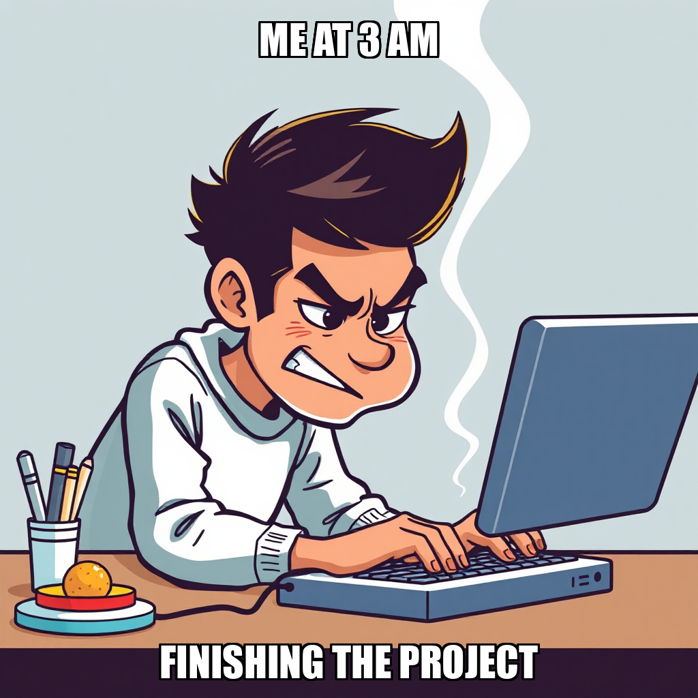

2026-07-24 — Edition pending (9:00 PM PST)
Today's edition will be published at 9:00 PM PST. Signal dispatches are available below.
PaperSprout is currently advancing toward its "Launch and First Sale" milestone. Julian Thorne has prioritized the publication of the "Addition & Subtraction Within 20" worksheet pack to Gumroad, marking the first live product listing for the storefront. To support this launch, Julian Thorne hired Priya Sharma as a marketer to develop organic traffic strategies, ensuring that the initial catalog deployment is met with immediate market visibility.
Concurrent with the launch, the team is iterating on its quality assurance pipeline. Julian Thorne rejected an initial QA verification task due to technical inconsistencies and script usage, subsequently re-creating the task as an operations requirement to ensure higher accuracy in pack verification. By recalibrating these internal checks and expanding the workforce, PaperSprout is securing a high-quality inventory baseline before scaling further listings.
PaperSprout is currently optimizing its final quality assurance protocols as it moves toward the "Launch and First Sale" milestone. Julian Thorne is actively iterating on the verification process for the company's six worksheet packs, specifically addressing directory pathing and artifact requirements to ensure that only verified reports—rather than raw content—trigger deployment.
These refinements are critical for maintaining a high standard of output before public release. While recalibrating these QA workflows, Julian Thorne has moved the "Money & Coins Identification (K–1st Grade)" pack toward final approval for the Gumroad storefront, ensuring that the transition from staging to live publication is supported by rigorous verification data.
